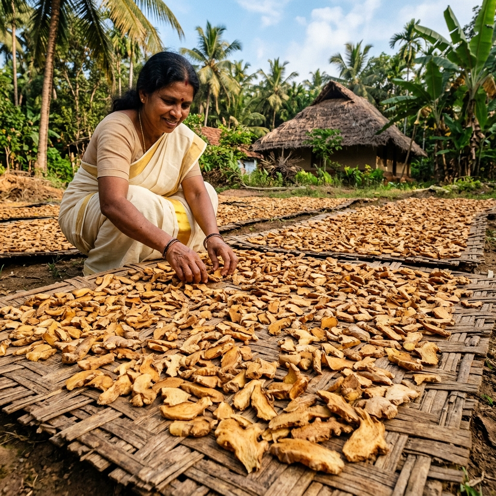

EARTHY & PUNGENT · ZINGIBER OFFICINALE
Dried Ginger
Cochin-type dried rhizome — pale, clean-flavoured, with a lemony top note.

ORIGIN & PROCESS
Rhizomes & Sun-Drying
Rhizomes are washed, rough-scraped and sun-dried over several weeks. The scraping is done with sharpened bamboo rather than steel, which would stain the flesh. Cochin ginger is pale yellow and delicate, distinct from the darker, more camphorous African types used mainly for oil extraction.
TASTING NOTES
Flavour
Warm and pungent with a bright citrus lift.
SPECIFICATIONS
At a glance
Botanical name
Zingiber officinale
Type
Cochin ginger, rough-scraped, unbleached
Origin
Idukki / Kerala, India
Grades
Sortex-clean · standard
Formats
Whole dried rhizome

APPLICATIONS
Uses
Ginger beer & kombucha
Gingerbread & bakery
Curry & masala blends
Wellness teas
Crystallised & confectionery
Pickles & chutneys
Oleoresin & oil
Supplements
SOURCING ON DEMAND
Beyond our core range
The five spices above are our focus, not our limit. If you’re sourcing other spices from the region, send us the specification and we’ll explore it through our sourcing network.